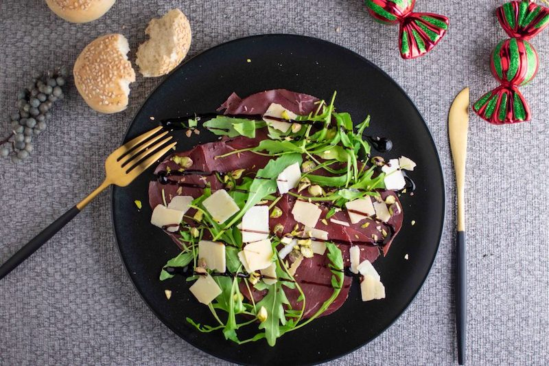

Black Angus carpaccio
Deze Black Angus is ideaal voorgerecht voor bijvoorbeeld met de feestdagen.
Ingrediënten
- 1 pak Lidl Delicieux Black Angus Bresaola
- 1 gram rucola
- handje pistachenoten (gepeld)
- 1 zakje geschaafde Parmezaanse kaas
- 1 flesje balsamico crème
- optioneel: kleine afbakbroodjes
Bereidingswijze
- Hak de pistachenootjes grof.
- Zet 4 borden op je aanrecht.
- Verdeel de bresaola over de borden.
- Leg een handjerucola op de bresaola.
- Verdeel cicra 1 el Parmezaanse kaas per bord over de rucola.
- Maak het af met een 'drizzle' balsamico crème.
